Sulphur Unit Frames
In devPlayer, target, target of target, focus and pet on secure buttons, with 2D or 3D portraits and a live preview in settings.
/sufSulphurUI is one suite of twenty-eight module addons — unit and raid frames, nameplates, action bars, a HUD you build row by row, meters, chat, a guild raid assistant and more — sharing one shell, one searchable settings panel, one first-run setup and one layout grid. Every module ships switched off until you turn it on.
A first-run Setup Wizard walks you through look, size, modules and layout in a few steps. Raid Frames, Unit Frames and Nameplates add their own wizards with live previews.
Every setting in every module lives in one registry. Type a word in /sui and each hit shows where it lives with its live control inline — the search result is the place you change it.
/sgrid opens the layout studio: pick a frame, type X and Y, toggle snapping. Every handle is the real size of the frame it moves, and /sgrid home snaps everything back.
A switched-off module costs nothing and everything is event-driven. On Retail the meters read Blizzard's built-in damage meter instead of parsing the combat log.
Unretouched captures of v0.118.0: the setup wizards and layout studio, and the WoW Forever test night of 26 September on a level 3 character. The build is still in progress — some Blizzard art, like the gold option labels and the parchment map, is not reskinned yet.
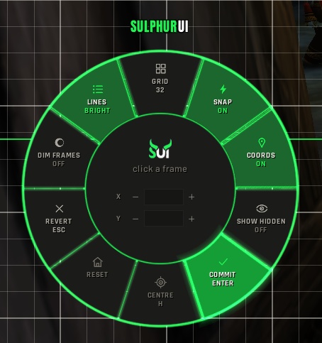
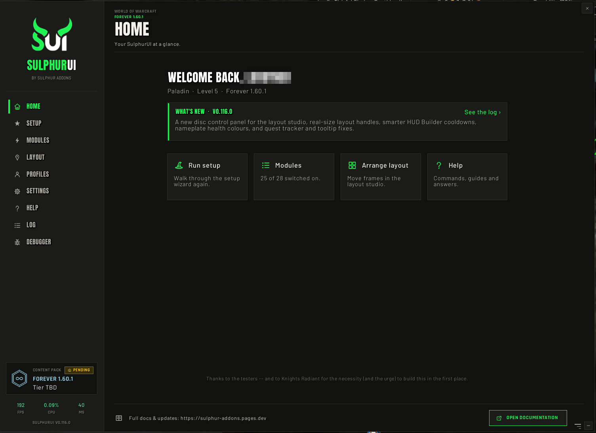
/sui Home page: what's new and four quick actions.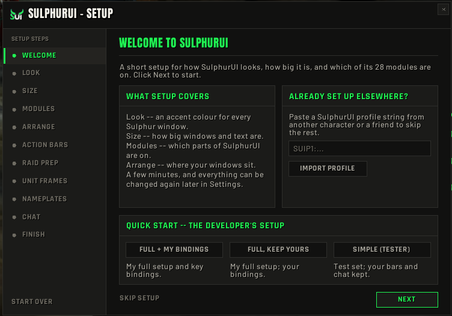
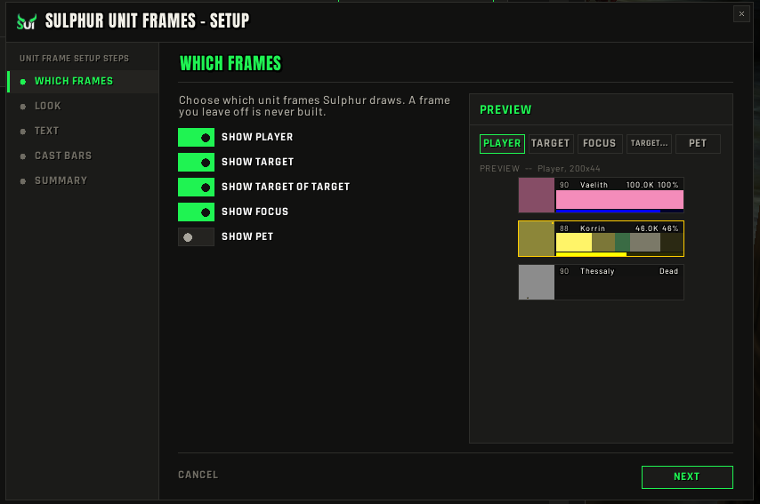
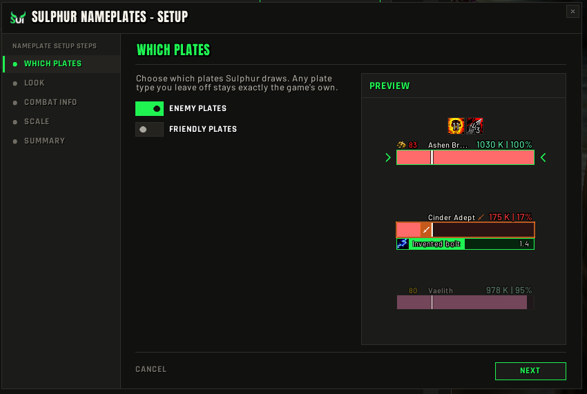
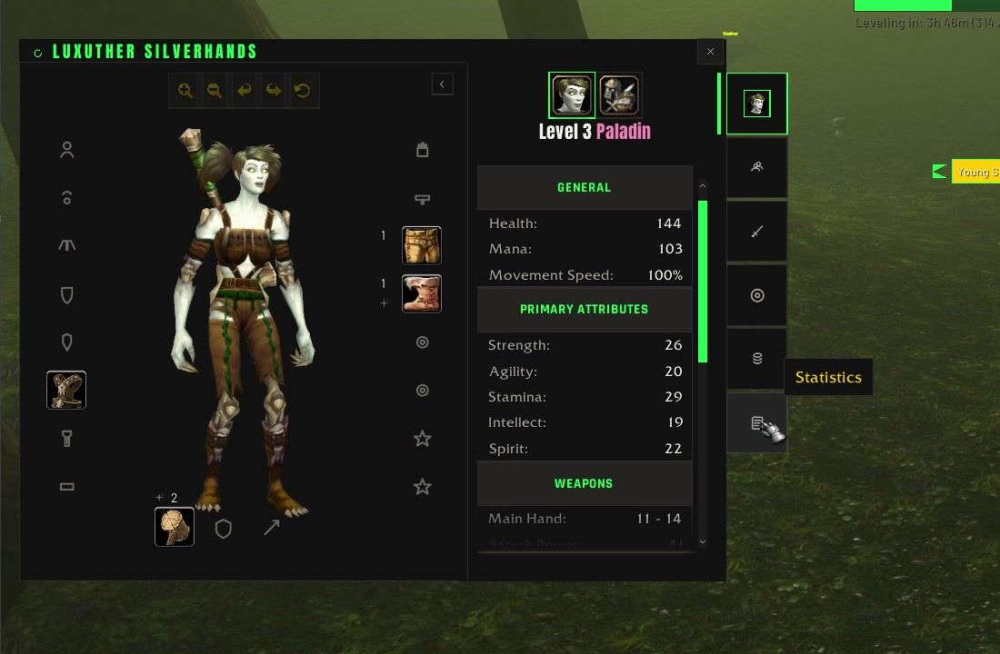
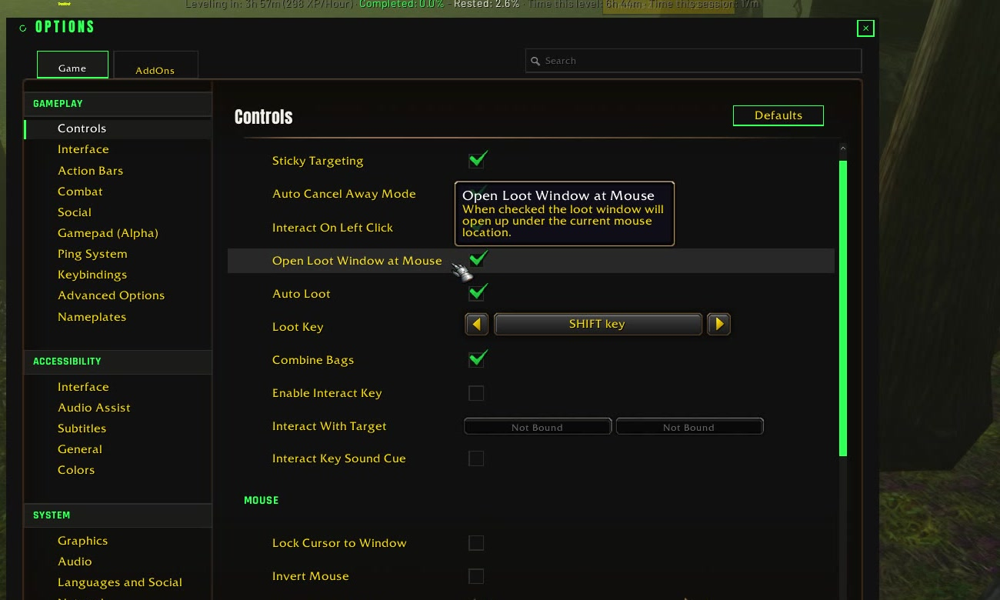
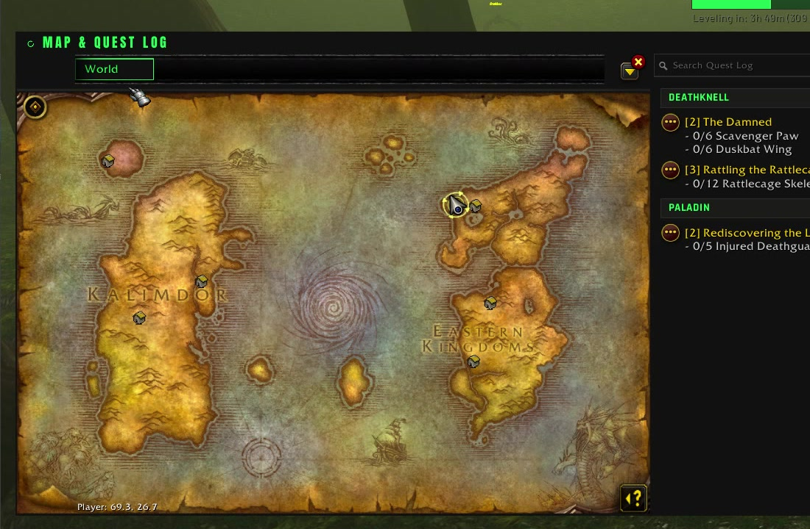
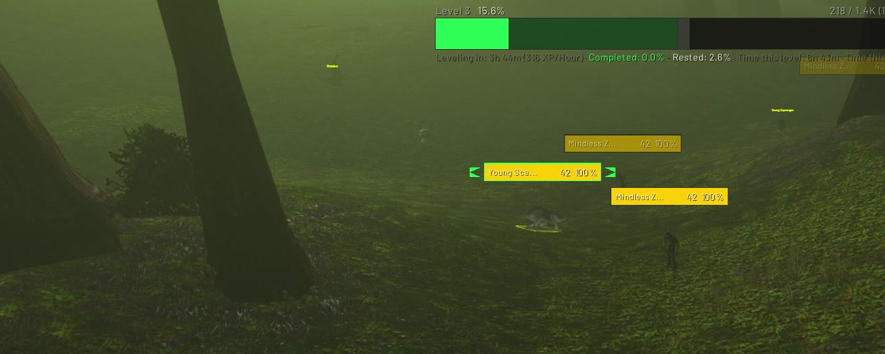
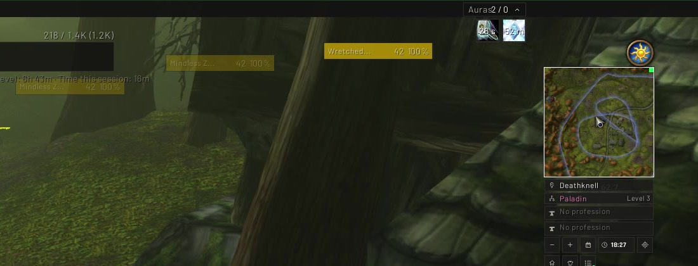
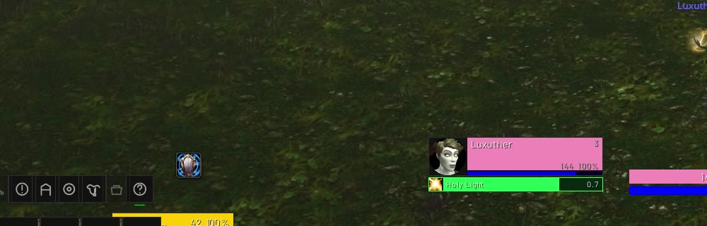
Each module is its own addon on the SulphurUI core, so they share one look, one settings panel, one first-run setup and one snap-and-dock layout grid. Every module runs on all four clients unless marked otherwise. Sulphur GRA is live; the rest is built and waiting on its in-game pass.
Guild Raid Assistant: Hero Plan lust calls, pre-raid and ready checks, BiS tracking, guild-bank scan, loot popup and raid-wide sync.
/sgraMoP ClassicPlayer, target, target of target, focus and pet on secure buttons, with 2D or 3D portraits and a live preview in settings.
/sufRaid frames with cast bars and a fake-roster preview, so you can size, sort and place them before raid night instead of during it.
/srfOur own plates on Blizzard's nameplate frames: health with an execute zone, cast bar, your debuffs with pandemic cues, and a taunt and CC row.
/snpEight bars on Blizzard's own buttons so cooldowns, charges and range stay exact. Secure paging, a keybind mode, mirrored pairs, and layout profiles that remember spells.
/sbars/skbBuild a HUD one row at a time per class and spec: health, power, pips, cast bar, cooldowns, auras, missing buffs. Cooldown rows track their own buff automatically.
/shbA player-centred stack of class pips, health, power and your cast bar, with secret-safe text and engine-smoothed bars.
/sresThree icon rows for the cooldowns, utility and procs you choose, including trinkets that show proc, then cooldown, on one icon.
/schudBlizzard's own cooldown viewers moved into placeable Sulphur containers, with a reversible restyle and drawn buff bars.
/scdmYour buffs and debuffs in two independently placed grids, with a fold-away header and a preview for placing them.
/sauraA missing-buff row for your class raid buff, upkeep buffs, weapon imbue and Healthstone. Out of combat only.
/sremA battle-res charge tracker and a movement-cooldown alert, both event-driven, both off until you want them.
/saidsHold a key, a ring of up to eight spells opens at the cursor, aim and release to cast. Works in combat.
/sqfA Sulphur vendor window: paged items, a Buyback tab, shift-click for a stack, confirms on costly buys, sell-junk and repair buttons.
/smerchantA raid-leader bar: raid and world markers, ready check, role check, pull timer and raid convert.
/srtUp to four thin meter windows. Drag one onto another and they dock into a train; click any bar for that player's spell breakdown.
/smeterTwo chat docks, conversation on the left and the system firehose on the right, with routing picked once in first-run setup.
/schatA square minimap with zone, spec and professions stacked beneath, a performance row, plus one bag that collects minimap buttons.
/smapA strip along the top or bottom edge: gold, durability, bag slots, zone, FPS and latency, clock, friends, guild.
/sinfoOne experience bar with completed-quest, incomplete-quest and rested overlays and optional texts.
/sxpDecorative bars, wedges and a clean top bar that frame your interface. Always underneath, never eats a click.
/shudQuick loot, auto repair, sell junk, quest accept, keystone slotting, an item upgrade calculator and more, every switch off by default.
/sqolA replacement bag window with flat item boxes and one search, sharing its container with Bank.
/sbagsYour bank in the same container as Bags, plus a shared-storage window for the guild bank and your alts.
/sbankA replacement mailbox window that stays out of the way until you open it.
/smail57 skin packs for Blizzard's own windows, with Sulphur header bands and gear-slot boxes. Every pack is off until you pick it.
A small gliding HUD: vigor pips, speed, Whirling Surge and Second Wind. Hidden in instances.
/sskyRetail onlyA Mythic+ run display: timer with chest thresholds, enemy forces, deaths and boss splits.
/smplusRetail onlyAlso in the box: a skinned quest tracker and quest log, themed movable tooltips, and preview pop-outs for Raid Frames, Unit Frames and Nameplates beside the settings window.
Plan Bloodlust per boss, catch missing consumables on every ready check, track BiS drops and pull timers, and sync it all across the raid automatically.
GRA knows your BiS list and its tiers. When an item drops it tells you whether it is your main-spec roll, checked against the item level you already wear.
Works with the Gargul loot addon: GRA reads its roll announcements live and pops up a verdict for that exact item, then closes on the award.
GRA scans the guild bank and shares it over the guild channel, so everyone's Storage window shows the same up-to-date stock.
Members can share their own bank with the guild too, so the loot helper can point you at the gem or enchant mat someone already holds.
Grab the latest release, v0.118.0, from Wago or CurseForge. Either desktop app installs it and keeps it updated.
Unzip the download so that SulphurUI and the module folders (SulphurGRA, SulphurRaidFrames, …) sit directly inside Interface\AddOns. If WoW is running, log out to character select so it picks them up, then check they are enabled in the AddOns list.
Type /sui in game. The first-run Setup Wizard walks you through look, size, modules and layout; every module stays off until you turn it on there.
/sgrid opens the layout studio to drag and snap every window where you want it. /shelp lists every command without leaving the game.
The full changelog is in game under /sui › Changelog, and on each release page on Wago and CurseForge.
/sui.Every new module is reviewed against the same four rules before it ships.
A switched-off feature registers no events and builds no frames. Hidden means unregistered, not just invisible.
New settings ship off, so an update never rearranges your screen without you asking.
No per-frame polling. A timer exists only while the text that needs it is actually on screen.
Blizzard's protected frames are placed and hidden through secure drivers, never hooked, so no mystery errors mid-pull.
Design mockups, not in-game captures. They set the direction for the Sulphur skin packs: dark flat panels, one green accent, hairline borders. The Great Vault and Character windows already ship in this style, and the rest follow.
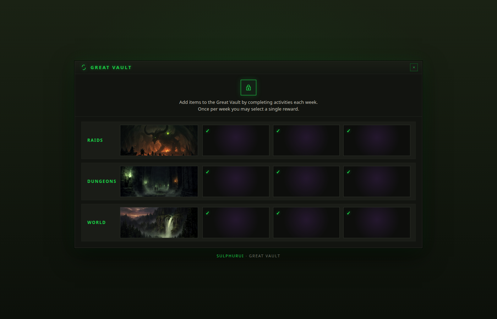
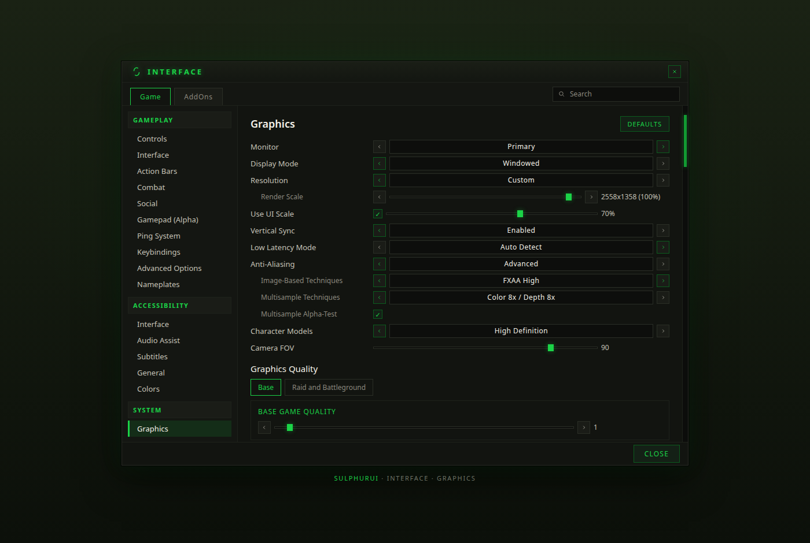
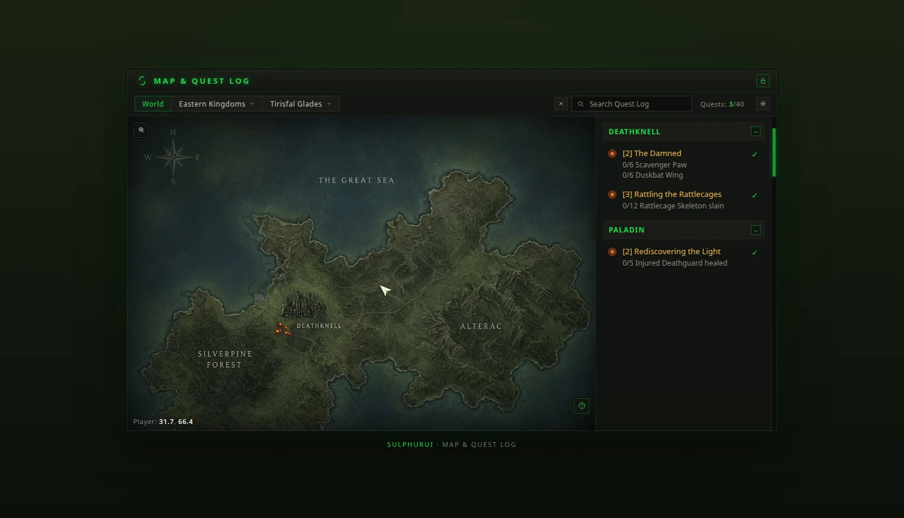
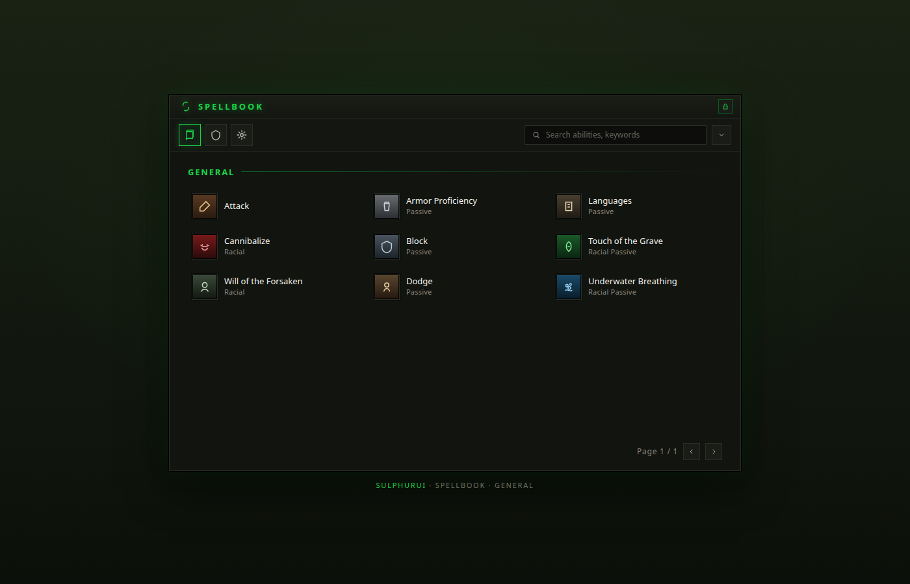
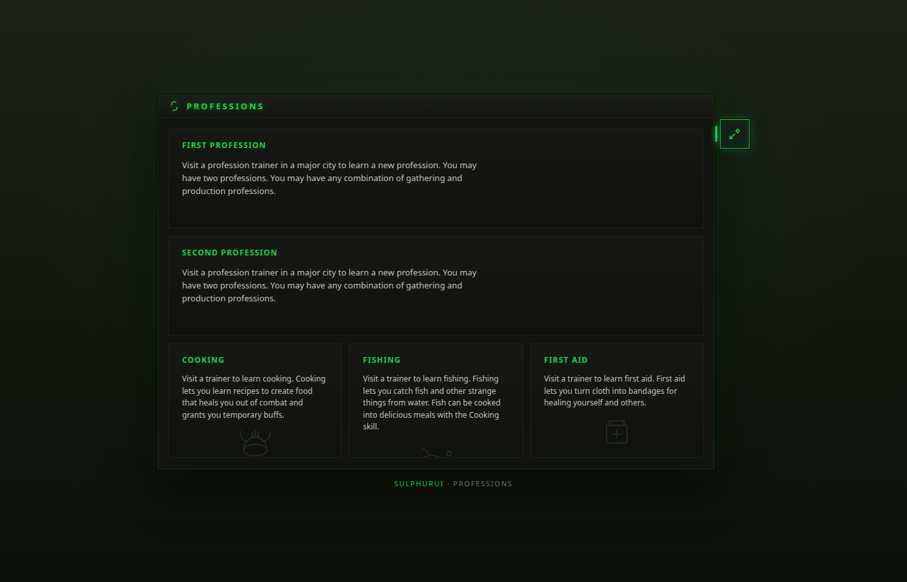
Send a bug report with your Debugger log (/sui › Debugger › Copy), or a suggestion, straight to Sulphur_Dev.